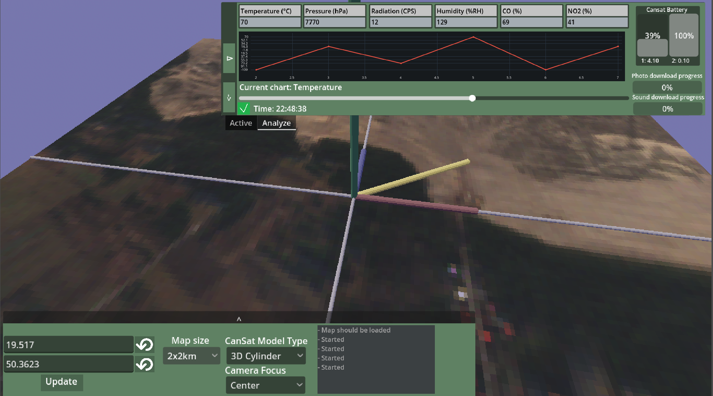

GniesApp (and GnieReadd)


{kind=link}
{kind=link}
Info
These are two contest-related apps for processing data from homemade satelite.
- GniesApp is the main program, whose purpose was to read hex data from USB and interpret them into multiple variables, that were measured by GnieSat satelite. It shows position and all the collected thata, that is further saved in json files, that also can serve as the data source.
- GnieReadd is a secondary application that exist purely for showing data on stream overlay. It sources on information taken from the main program that sends it through the network.
The thing i remember the most about the project is that i tried doing it on my custom framewor (BallEngine)
What it has:
- Reading and Writing to json file
- Reading from USB ports
- Hex data stream operations
- Charts
- Scrollable data timeline
- Integration with Google Earth (sampling appropriate photo on given coordinates)
- UI
Tools used:
- Godot
- Microsoft Visual Studio (C#)
- Addons:
- Easy Charts
- Image Bytes
- Orbit Camera
What I learned from it:
- Code integration with web services
- Charts
- Data streams
- Reading from ports
My biggest mistakes:
- Tried doing this app on BallEngine (my homemade framework)